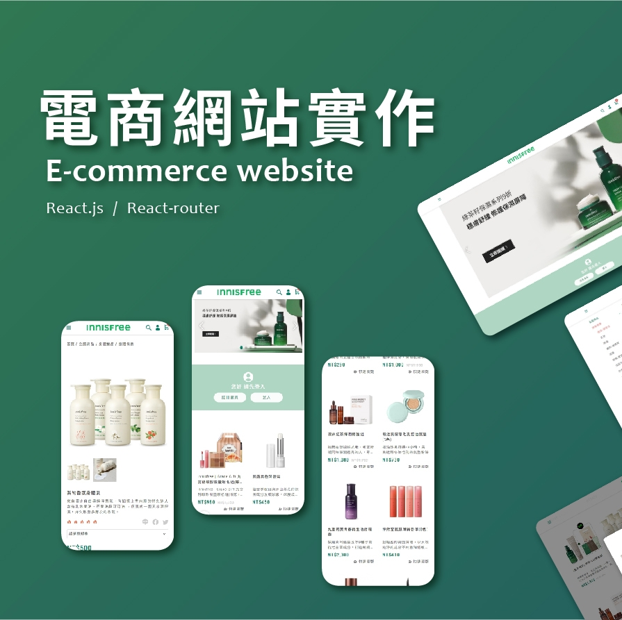
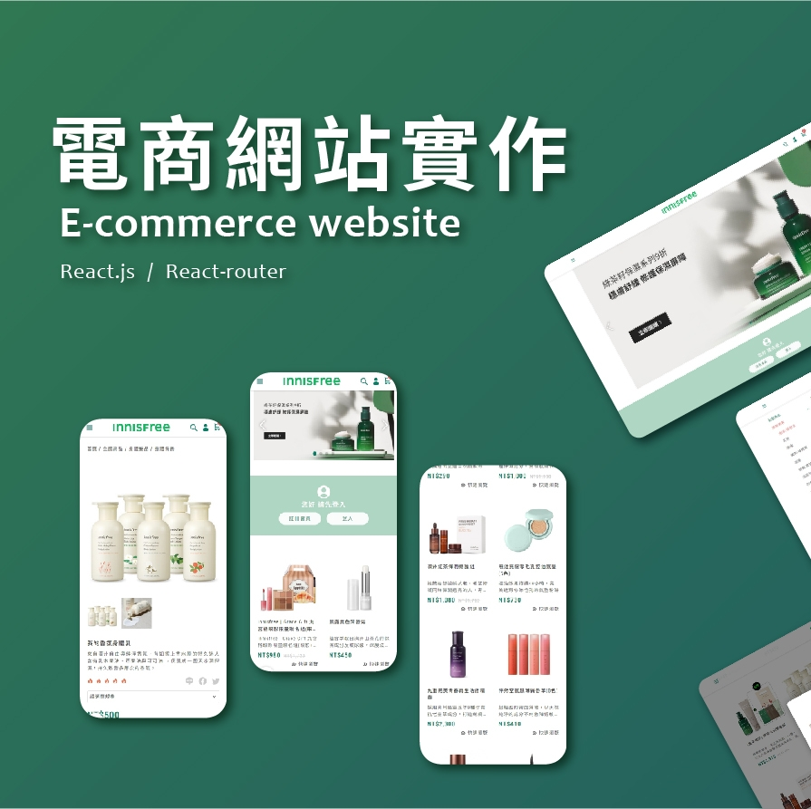

Aboutme
嗨，我是亭予，當了三年的專案規劃，2023年開始自學前端並轉職成功。
 

Skills
Web Layout
- HTML5
- 精通網頁標記語言，應用語義化標籤提升 SEO
- RWD 響應式網頁規劃
- 跨瀏覽器的處理（Cross-Browser）
- CSS3
- Sass / SCSS 預處理器
JavaScript
- 瞭解 ES6 標準
- AJAX / JSON 串接 RESTful API
- Rapier.js / Cannon.js 編寫角色控制及車輛運動效果
- Web Worker 進行多線程操作
- WebSocket 實現即時通訊
- React.js
- 使用 hooks 進行狀態管理、性能優化和複雜邏輯處理
- React-router 管理路由
- CSS Modules / styled-components 管理樣式
Art
- WebGL
- Three.js 研究過效能優化（視錐體剔除、深度剔除）
- Canvas
- Phaser.js 遊戲製作
Others
- Node.js / Express
- Git / GitHub 基本指令運用
Portfolio

網站DEMO
- HTML / CSS / JavaScript(ES6)
- GSAP
- OpenAI API 串接
- Node.js
此專案大約花費兩週的時間完成，我參考了 Codepen 上的作品，製作了可拖動的黏黏球效果。為了增加趣味性，我還在手機版上加入了陀螺儀偵測功能，使黏黏球能隨著手機轉動改變方向。
背景及文字顏色也有小巧思，每次切換頁面都會隨機搭配不同的顏色。
我還加入了桌寵元素，使其可以被使用者拖拉或點擊，並能在特定區塊上行走。桌寵聊天室串接了 OpenAI，並為其設定了角色，讓它只會回覆相關的話題。
在 Portfolio 的部分，為了確保輪播之間有流暢的視覺效果，我使用了 GSAP 來輔助動畫效果，並自行編寫了輪播的 JavaScript。
Experience
2023/09 - 2024/06
- 跳跳股份有限公司 - 前端工程師
- 專注於視覺藝術設計，提升網站和應用的美觀度
- 自行發想並設計專案，從概念到完成
- 進行跨瀏覽器測試，確保網站在不同裝置上的一致表現
- 解決技術問題，持續改進代碼質量
2020/07 - 2023/08
- 揚京快客網路科技公司 - 專案規劃
- 規劃網站架構、討論網站細節、產品邏輯測試
- 與設計師、切版師、工程師及客戶窗口溝通，持續追蹤並解決問題
- 優化使用者驗收流程，協助工程師修整速度加快約 30 ~ 40%
2019/12 - 2020/05
- 三商美邦人壽 - 保險專員
- 提升與人溝通與待人處事的技巧
2018/05 - 2019/12
- 五蘊環境科技有限公司 - 行政助理
- 協調工作時程、接聽社區電話、繪製下水道管線圖
- 提升危機處理的能力
Introduction
嗨！我是亭予！
在成為前端工程師之前，我曾是專案規劃，擁有上百間網站規劃經驗，能夠捉住程式盲點和解決 BUG，並通過大量蒐集 UI/UX 資料，與工程師有效溝通，共同改善程式。
一次偶然機會下，設計師教我通過簡單的代碼改變網站外觀，這激發了我對前端技術的興趣，從此踏上了學習前端的旅程。
在跳跳，我開始了第一份前端工程師工作。由於老闆非常重視視覺畫面呈現，所以他希望我從零開始學習 Canvas 和 Three.js 等視覺技術，並將這些技術應用於視覺創作及製作 H5 遊戲，因為遊戲製作，讓我也順理成章接觸到物理引擎、效能優化以及多人連線等相關技術，這些經驗大大提升了我的前端技術能力、創意設計能力和問題解決能力。
目前雖然沒有團隊協作的經驗，但我學會了如何獨立完成各項任務，並在壓力下保持高效工作。我能夠快速學習新技術並應用於實際開發，這些能力讓我在面對各種挑戰時都能應對自如。
在未來的工作中，也希望能有更多與團隊協作的機會，通過與同事的互動和學習，進一步提升自己的專業技能。